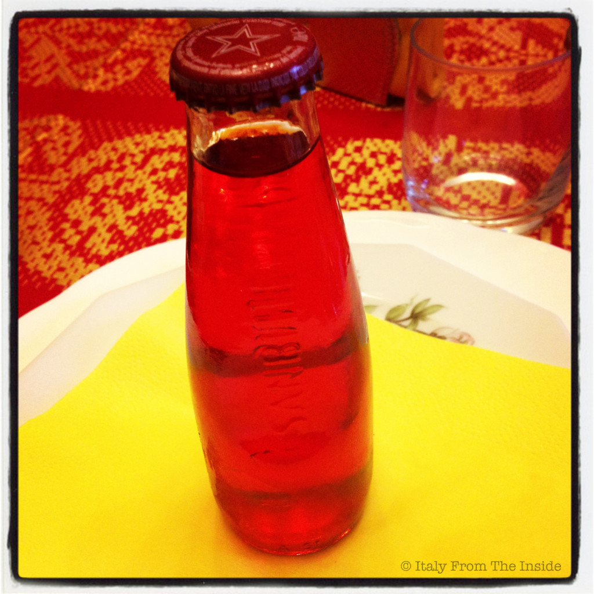

For many Italians the aperitivo by definition is the famous Sanbittèr. This alcohol-free drink was first made in 1961 with a recipe of herbs and citrus extracts. It's sweet at first, but with a bitterish aftertaste. It is delicious with stuzzichini (finger food) and it can be a tasty main ingredient for many creative cocktails for the Italian happy hour.